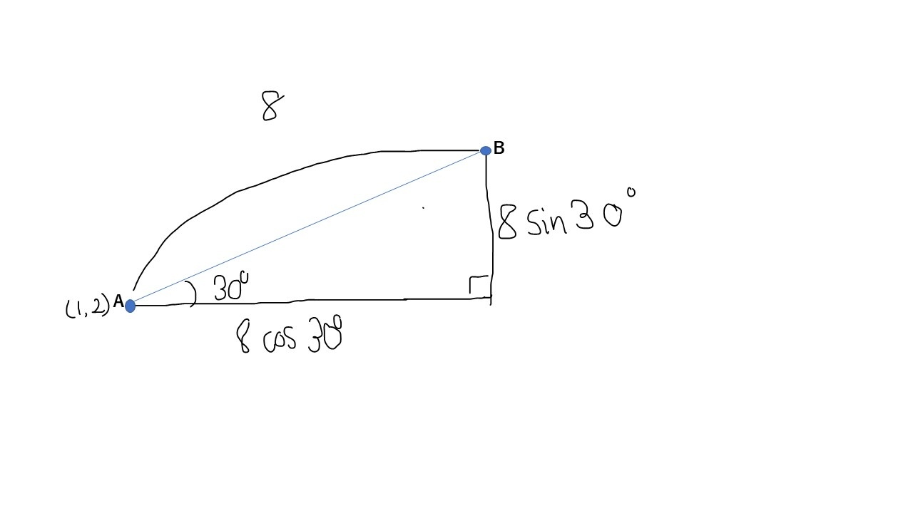
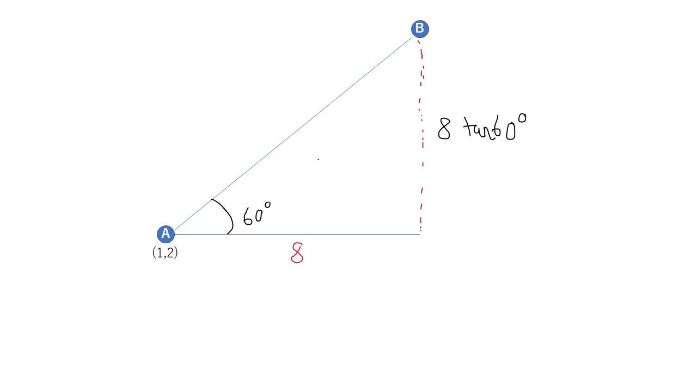

0.ゲーム数学入門（α版） / 8. 三角比_確認問題（Zenn から 2026-10-30 に保存。本文の最終更新 2025-06-11T15:02:38.152+09:00）
1.30度,60度,90度,120度,150度,180度 をπを用いて表せ。
2.210度,240度,270度,300度,330度,360度 をπを用いて表せ。
3.45度,135度,225度,315度 をπを用いて表せ。
4.半径が8の円の円周の長さと面積をπを用いて求めよ。
5.斜辺a,底b,高さcのなす角Θの直角三角形が存在する。sinΘを求めよ。
6.斜辺a,底b,高さcのなす角Θの直角三角形が存在する。cosΘを求めよ。
7.斜辺a,底b,高さcのなす角Θの直角三角形が存在する。。tanΘを求めよ。
8.斜辺a,底b,高さcのなす角Θの直角三角形が存在する。三角比とaを用いてbを求めよ。
9.斜辺a,底b,高さcのなす角Θの直角三角形が存在する。三角比とaを用いてcを求めよ。
10.底b,高さcのなす角Θの直角三角形が存在する。三角比とbを用いてcを求めよ。
11.
12.
13.
14.tanΘをcosΘとsinΘで表せ。
15.1をcosΘとsinΘで表せ。
16.物体Aと物体Bの距離が8であり、物体Aの位置が(1,2)である。AとBのなす角は水平線を基準として反時計回りに30度である。物体Bの位置(x,y)を求めよ。
17.物体Aと物体Bの水平距離が8であり、物体Aの位置が(1,2)である。AとBのなす角は水平線を基準として反時計回りに60度である。物体Bの位置(x,y)を求めよ。
1.
2.
3.
4.
5.sinΘ=
6.cosΘ=
7.cosΘ=
8.b=acosΘ
9.c=asinΘ
10.c=btanΘ
11.
12.
13.
14.
15.
16.
まずは図示します。

